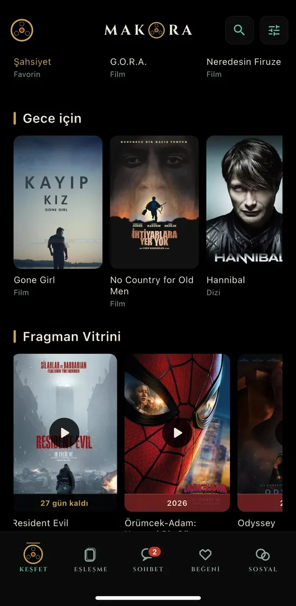
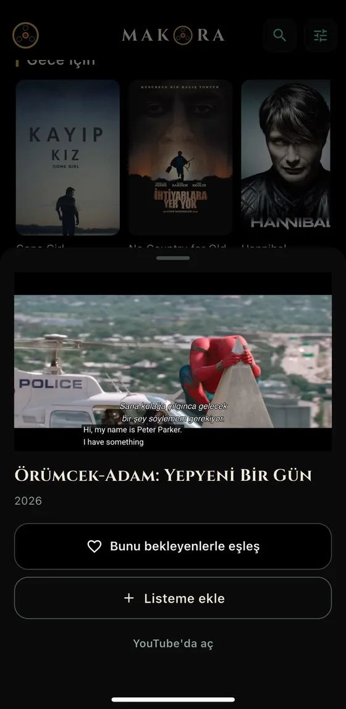
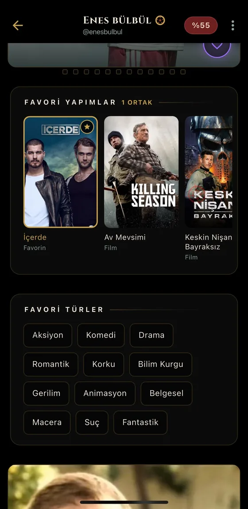
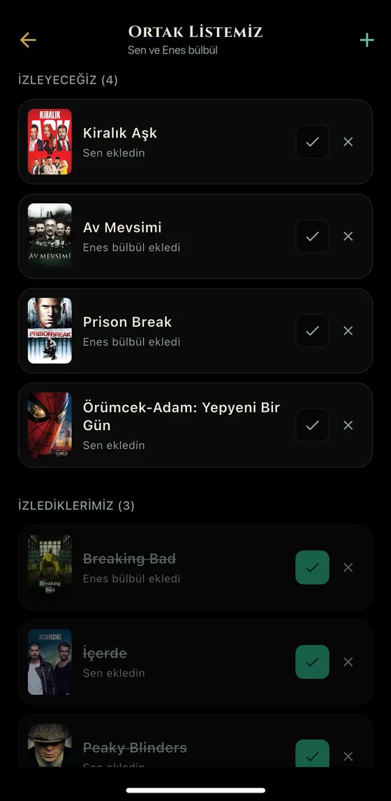
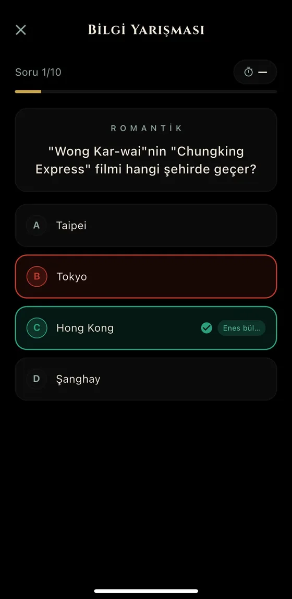
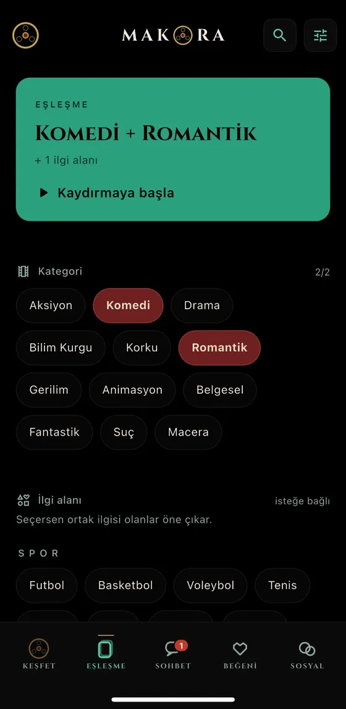

Fragman vitrini
Vizyona girecek ve öne çıkan yapımların fragmanları ana sayfanda. Uygulamadan çıkmadan izle.
MAKARA film ve dizi zevkine göre kurulan bir sinema topluluğu. Fragmanı burada izle, o filmi bekleyenleri bul.






Vizyona girecek ve öne çıkan yapımların fragmanları ana sayfanda. Uygulamadan çıkmadan izle.
Video biter bitmez o filmi bekleyen seyirciler karşında. Konuşacak konu zaten belli.
Favorilerin, listen ve türlerin karşılaştırılır. Uyumu ve ortak filmlerinizi birlikte görürsün.
Tanıştığın kişiyle tek bir liste. Kim ne ekledi, hangisini izlediniz — hepsi ortak.
Seçtiğiniz türden on soru. Kim daha çok sinema biliyor, konuşurken öğrenirsiniz.
İki tür seç, o türü sevenleri gör. Rastgele değil — zevkine göre.
Aynı filmleri sevenler birbirini bulur.
Repress StudioBoş bir “selam” yerine, konuşacak bir şeyle başla.
Rastgele değil; film ve dizi zevkine göre. Ortak beğeni gerçek bir başlangıç.
Ne izlediğini paylaş; kısa ömürlü notlarla anlık bir bağ kur.
İzlediğin filmleri incele, puanla, kendi eleştirmen profilini kur.
Engelleme, şikayet ve görsel denetimiyle kontrollü, saygılı bir topluluk.
Film ve dizi zevkine göre. Favori yapımların ve tercihlerin üzerinden seninle ortak beğenilere sahip kişileri önerir; böylece konuşacak bir şeyin baştan olur.
Temel özellikler ücretsiz. Dileyenler için ek olanaklar sunan premium kademeler var: Bilet, Loca, Başrol ve Yönetmen.
Tüm iletişim şifreli bağlantı üzerinden yapılır ve verilerin satılmaz. Ayrıntılar için Gizlilik Politikası ve KVKK sayfasına bakabilirsin; hesabını istediğin an tamamen silebilirsin.
Google Play’de yayında. iOS sürümü App Store incelemesinde. Gelişmeler için @socialmakara.